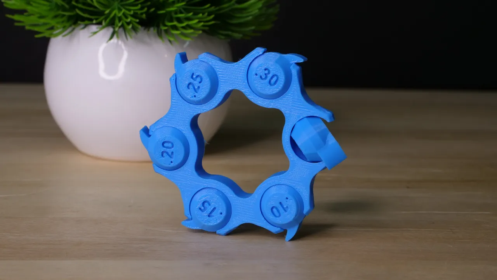

Kalibrační model určený pro testování tolerance a přesnosti 3D tiskárny.

Autor modelu:
Autor modelu: 3DMakerNoob
Zdroj: Printables
Licence: CC BY-NC-SA 4.0
Model slouží pouze jako ukázka kalibrace a testu tiskárny.